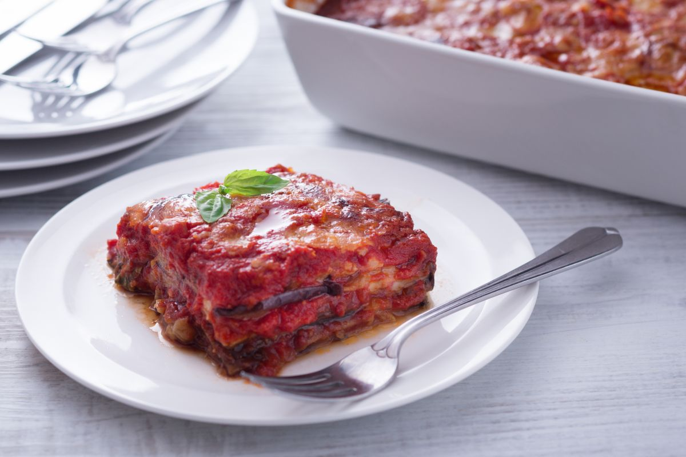

Eggplant parmigiana

Description
Just say its name and there's a standing ovation at the table. It's
the queen of single courses, the consolation for hurt feelings:
eggplant parmigiana. A recipe shared and disputed
as to origins from north to south: Emilia Romagna, Campania
(Parmigiana is mulignane) and Sicily (Parmiciana or Patrociane)
with some variations in ingredients and ways to compose it, but all
absolutely fabulous! Do you ever wonder why it's called that? The
name "Parmigiana" comes from the Sicilian
"Parmiciana", which in dialect means the stacked wood
slats in blinds: think about how the slices of eggplant are
arranged in the pan and you will see the similarities. Few
ingredients, lots of flavor for a dish that is a symbol of
Mediterranean cuisine: tomato, eggplant, basil and cheese... a mix
that also goes perfectly with pasta as in the recipe for lumaconi
alla parmigiana (snails parmigiana). But now make a succulent
eggplant parmigiana with us!
Ingredients
- Black eggplants, 1.5kg.
- Fior di latte mozzarella cheese, 500g.
- Yellow onions, 1
- Black pepper, to taste
- Fine salt, to taste
- Coarse salt, 35g.
- Tomato puree, 1.4l.
- Parmigiano Reggiano DOP cheese, 150g.
- Extra virgin olive oil, to taste
- Peanut seed oil, to taste
Steps
-
To prepare the eggplant parmigiana, start by washing and drying
the eggplant. Then with a knife remove the stem and slice the
eggplant lengthwise with a vegetable slicer, or alternatively
with a knife, to obtain slices about 1/8' (4-5 mm) thick.
-
As you place the slices inside a colander, sprinkle them with a
very small amount of coarse salt between the layers, well
distributed (you can also use a little fine salt); continue
this way until you finish it all.
-
On top of the eggplants, place a plate with a weight on it to
let the eggplants purge the excess water and slightly bitter
taste, the enemy of fried food.
-
Leave it like this for at least 1 hour. Remember to rinse the
slices well under running water, one by one if necessary, to
remove the salt and pat them dry before use.
-
In the meantime, slice and cut the fiordilatte cheese into
strips, after which you will have very small cubes. If you
don't have another colander, you can place them on a very clean
cloth.
-
In the meantime, make the sauce. In a large saucepan pour a
drizzle of extra virgin olive oil and add the chopped onion,
stir often so as not to burn it and let it brown for a couple
of minutes.
-
Then add the tomato puree and a little water, the salt and let
it simmer for 45 minutes. When finished cooking do not forget
to add the basil leaves by hand.
-
Heat plenty of vegetable oil and in the meantime rinse the
portion of eggplant that you are going to fry and dry it with
oil blotting paper: always proceed a little at a time so they
do not darken 11.
-
Fry a few slices at a time 12 in boiling oil at 340° F (170°
C).
-
After cooking 2-3 minutes, drain on absorbent paper; do the
same with all the others. At this point you should have
everything you need, so move on to putting it together.
-
Cover the bottom of an 8 x 12" (20x30cm) baking dish with a
little sauce, then make the first layer by arranging the
eggplant slices horizontally.
-
Grate some black pepper, sprinkle with parmesan cheese and pour
some cubes of fiordilatte cheese, distributing them evenly. And
finally pour on a little more sauce, just enough to color the
inside.
-
Repeat the same procedure this time by arranging the eggplant
slices on top; continue this way to make the layers by
inverting the direction of the slices each time.
-
Between layers, remember to press gently with the palms of your
hands in order to compact them. On the last layer pour the
remaining tomato puree, the cubes of fiordilatte and parmesan
cheese.
-
Now it's time to bake your eggplant parmigiana in a hot oven at
400° F (200° C) for 40 minutes.
-
Once ready, let it cool a few minutes before serving.
To Homepage